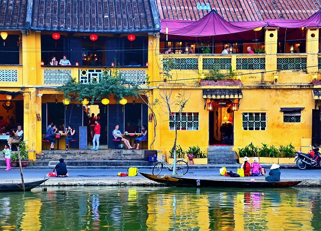

Trang chủ
Tin tức
Bài viết
Kể chuyện về miền di sản qua chuyến phiêu du vòng quanh Vinpearl Nam Hội An
12/02/2023
5.691
Mục lục
Giới thiệu về phố cổ Hội An
Kể câu chuyện về “làng” Việt Nam vào trong 1 nốt nhạc qua hành trình trải nghiệm Vinpearl Nam Hội An
Đi tìm cổ tích di sản các loài thú Việt Nam tại Vinpearl River Safari Nam Hội An
Nghe kể những câu chuyện li kì về thế giới của các loài vật
Lạc bước vào Nhà vẹt trong chuyến trải nghiệm Vinpearl Nam Hội An
1. Tái hiện miền di sản Hội An với dòng sông thương nhớ
Mỗi lần bước chân đi là mỗi lần trải nghiệm, đối với người có cái thú mê đi sẽ hiếm khi trở lại một nơi mình đã từng ghé thăm. Vậy mà nhắc đến Hội An, điều mà người ta nói nhiều nhất chính là đi cho thỏa lòng mong nhớ dù đã từng ghé Hội An nhiều lần. Nhớ về Hội An là nhớ tới nét vàng son của cái không khí cổ xưa dọc theo từng tuyến phố.

Ảnh từ nguồn iternet
Với đặc trưng riêng biệt của phố cổ và đèn lồng, Vinpearl Nam Hội An đã tái hiện phố cổ Hội An thu nhỏ, nguyên vẹn các cung bậc cảm xúc bên dòng sông thương nhớ uốn quanh. Dãy phố mô phỏng kiến trúc đặc trưng của phố cổ Hội An với mái ngói đỏ rêu phong, giàn hoa giấy đỏ đặc trưng phối với tường màu vàng rực rỡ.